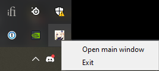

Update Genshin Impact 2.3.0 Manual
2021-11-26 / Dimas Lanjaka
Update genshin impact 2.3.0 manual via download manager (IDM).
Download Genshin Impact Patches
Patch 2.1.0 - 2.3.0
- en-us_2.1.0_2.3.0_diff_9WOeMLlpzcFh7owj.zip
- game_2.1.0_2.3.0_diff_IFqrKCzDYyUt697g.zip
- ja-jp_2.1.0_2.3.0_diff_8nXfsMArgbPOU30c.zip
How to updating to 2.3.0
After you have all the files, you can start the updating process.
- Firstly, open the Genshin Impact launcher, and make sure it is updated. This means, that the launcher version is updated, and not the game version. This is automatic, and you will be prompted.
- Now, click on the Update button, and then click Pause, after a few seconds.
- Close the launcher, and make sure it isn’t running in the background. You can also check if it is running in the taskbar, close it from there too.

Genshin Impact running in the taskbar > right click > exit
Now,
- go to the following location C:\Program Files\Genshin Impact\Genshin Impact Game\
- delete all the .zip_tmp files if exists ( temp files that were downloaded when you hit the Update button )
- Copy all the files you downloaded in the “Required Downloads” section, and paste them in the following location ( the patch file for 2.3.0, and the audio files) C:\Program Files\Genshin Impact\Genshin Impact Game\ (or wherever the game is installed, just make sure it is in the Genshin Impact Game folder)
- Open the launcher, and it will say Pre-installation done
Important things to note
- DON’T EXTRACT THE FILES . If you extract the files, you won’t be able to play it until 2.3.0 is live. We recommend you don’t do that.
- Pre-installation done means that you can keep playing the Genshin Impact game until the patch is live
- If you are following this guide after the patch is live, it will say Update instead of Pre-installation done. Click that, and it will install the files you downloaded above
Simple way
- Download Update Version Or Full Game Version
- Copy all to your Genshin Impact\Genshin Impact Game\ folder
.. Preview Example::
.
|-- C:
|-- Program Files
|-- Genshin Impact
|-- Genshin Impact Game
|-- game_..._diff_H8LGSgKU.zip
|-- ja-jp_..._diff_hfBOW6ym.zip
|-- ko-kr_..._diff_NcX8UP1L.zip
|-- en-us_..._diff_KdXT5Pi0.zip
`-- zh-cn_..._diff_hvg2F3QM.zipScreenshot

Older Patches
Patch 2.0.0 - 2.1.0
- en-us_2.0.0_2.1.0_diff_n8EeG923ZU1BPcgq.zip
- game_2.0.0_2.1.0_diff_kYU5QpgOiPB1woI4.zip
- ja-jp_2.0.0_2.1.0_diff_Ub6DpehQk19xKEVa.zip
Patch 1.6.1 - 2.0.0
- en-us_1.6.1_2.0.0_diff_pa7XSfuvwheYHlR4.zip
- game_1.6.1_2.0.0_diff_GLrkVi02eEIJHmoZ.zip
- ja-jp_1.6.1_2.0.0_diff_Rr1nlK3O0Wjgo4M2.zip
- ko-kr_1.6.1_2.0.0_diff_YHsxbir0lqzcvNIk.zip
- zh-cn_1.6.1_2.0.0_diff_kxn7JGptOMsUWeXf.zip
Patch 1.6.0 - 1.6.1
- en-us_1.6.0_1.6.1_diff_hfuFbIATOe16BZwW.zip
- game_1.6.0_1.6.1_diff_nUOVRNMH4fb1tJsC.zip
- ja-jp_1.6.0_1.6.1_diff_8fK2vdMnkmsHEO4e.zip
- ko-kr_1.6.0_1.6.1_diff_bfFmUj9kRoEZIuWz.zip
- zh-cn_1.6.0_1.6.1_diff_spTaeOM64imbcLGw.zip
Full Game
Another Components
Old Version
Chinesse Version
Patch v.1.5.0 - v.1.5.1
- en-us_1.5.0_1.5.1_diff_Gg3Q5aOK.zip
- game_1.5.0_1.5.1_diff_MF8HJNzT.zip
- ja-jp_1.5.0_1.5.1_diff_P72LxVCa.zip
- ko-kr_1.5.0_1.5.1_diff_4wMycdN3.zip
- zh-cn_1.5.0_1.5.1_diff_2heO3D7V.zip
| Title | URL |
|---|---|
| Blog | webmanajemen.com |
| Git Page | www.webmanajemen.com |
| GitHub | github.com/dimaslanjaka |
Update Genshin Impact 2.3.0 Manual
PermaLink: https://www.webmanajemen.com/Genshin Impact/Update/update-genshin-impact-2.1.0-2.3.0.htmlIncoming search terms for Update Genshin Impact 2.3.0 Manual:
- Update Genshin Impact 2.3.0 Manual
- Update Genshin Impact 2.3.0 Manual WMI Genshin Impact
Google Rich Snippets | Schema Markup Validator | Google Pagespeed Insight